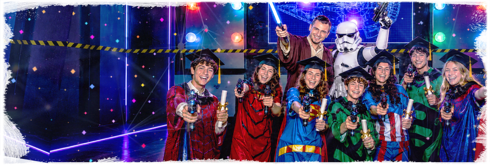

Квест
Командный сценарий помогает детям включиться в общий праздник и пройти задания вместе.

Выпускной для класса в Иркутске: квест, активная игра, чайная зона, дискотека, фотосъемка и понятная программа для детей и родителей.
Выпускной в IQuest подходит для школьного класса, который хочет отметить окончание учебного года активно, ярко и без отдельного кафе.
Программа длится около 2 часов 50 минут: квест с ведущим, активная игра на выбор, чайная зона, дискотека и фотосъемка.
Для класса или группы от 10 человек можно подобрать сценарий по возрасту, разделить детей на команды и добавить питание, конкурсы или дополнительные игры.
1. Выберите дату и время
2. Укажите класс и количество детей
3. В комментарии напишите: Выпускной
Командный сценарий помогает детям включиться в общий праздник и пройти задания вместе.

NERF, лазертаг или прятки добавляют движение, соревнование и эмоции.

Чайная зона, дискотека и фотосъемка помогают завершить выпускной ярко и спокойно.
Полный набор карточек помогает выбрать сценарий под возраст класса: сначала детские варианты, затем более напряженные форматы для подростков.


Для подростков можно выбрать страшные квесты, прятки или активные игры с более высоким темпом.
В Иркутске праздник можно провести на площадках IQuest в мк-не Юбилейный и на ул. Баррикад. Администратор подберет адрес под выбранную дату, возраст и программу.
На странице собраны условия именно для Иркутска: адреса, карта, расписание, формат программы и детали для родителей.
Перед бронью лучше назвать дату, количество гостей, возраст участников и пожелания по программе - администратор подскажет свободное время и удобный тайминг.
Школьный выпускной в Иркутске проходит на площадках IQuest: Иркутск: мк-н Юбилейный, 17; ул. Баррикад, 33.
Площадка IQuest для праздников, квестов, активных игр и чайной зоны.
Открыть в Яндекс КартахВторая иркутская площадка IQuest для праздников, квестов и командных программ.
Открыть в Яндекс КартахОсновное для родителей и класса: цена, состав программы, оплата, перенос, адреса и телефон для бронирования в Иркутске.
2500 руб./чел. для группы от 10 человек. Итог зависит от даты, количества детей, сценария и дополнительных услуг.
Квест с ведущим, активная игра на выбор, чайная зона, дискотека, фотосъемка и помощь администратора по таймингу.
Питание, торт, напитки, кейтеринг, декор, дополнительное время и расширенная программа согласуются заранее.
Бронирование - 5000 руб. в день записи; остальная сумма оплачивается на месте по фактическому количеству гостей. Доступны наличные и мобильный банк.
Перенос зависит от свободного времени. Возврат в отдельных случаях возможен не позднее чем за 10 дней по заявлению на email iquest38@mail.ru.
Иркутск: мк-н Юбилейный, 17 и ул. Баррикад, 33.
Школьники 7+, классы и детские группы от 10 человек. Администратор подберет адрес под сценарий и дату.
Фото комнат, игровых зон, реквизита и чайной зоны лучше смотреть на страницах выбранного города и сценария. Игры и праздники проходят по предварительной записи, телефон: 8 (901) 666-888-1.
Выпускной проходит на площадках IQuest: Иркутск: мк-н Юбилейный, 17; ул. Баррикад, 33.
Стоимость - 2500 руб./чел. Программа рассчитана на группы от 10 детей.
Базовая программа длится около 2 часов 50 минут: квест, активная игра и финал в чайной зоне с дискотекой и фото.
Можно выбрать детские квесты, NERF, лазертаг, прятки и более напряженные сценарии для подростков по согласованию.
Да, торт, напитки, свою еду, кейтеринг, декор и дополнительное время можно согласовать заранее.
Позвоните по номеру 8 (901) 666-888-1 или оставьте бронь на сайте. Администратор уточнит дату, возраст, количество гостей и формат программы.
Позвоните, и администратор поможет подобрать программу под возраст, количество детей и бюджет.
Позвонить 8 (901) 666-888-1